One of my all time, favorite, websites is “Ancient Origins“. There, resides a repository of hundreds, if not thousands of articles, stories and editorials written by real experts in the fields of archaeology, sociology, anthropology, and the sciences. And their articles are interesting and fascinating, and I could read them for hours and hours, and hours.
ZHENG HE AND HIS TREASURE FLEET During the reign of China’s Yongle Emperor in 1403, an imperial order was issued to begin the construction of a fleet of super-ships – vessels vastly bigger than anything ever seen before. Officially called Xiafan Guanjun (‘The Foreign Expeditionary Armada’), the behemoth boats would become better known as the Ming Empire’s treasure ships.
I’ve been wanting to reprint a few articles to MM, but haven’t had the time. I’ve chosen this beauty. And of course, It’ is reprinted exactly as found and all credit to the author. I only changed the formatting to fit this venue. This article can be found HERE, and I strongly urge the interested reader to bookmark this site and visit if often. It, like MM, has things that you will not find anywhere else, and that makes it precious.
Metallicaman Introduction
One of the things that really irks me is the statist belief that the entire American continent was populated by nomadic people from Asia that tromped over the Bering Straight on a “land bridge” and then head Southward to populate the Americas. There, they lived in peace and prosperity until the arrival of the Europeans.
And while that is certainly plausible, and does account for some dominant DNA persistence in the America’s, it is not the whole story.
The actual story is that the American continent has seen waves and waves of settlement. They came in various sizes and shapes over the years, and it was NEVER a wholly isolated and independent land-mass.
And every time I see evidence of this, whether a story here, or an article there, my “ears perk up” and I devour the article ravenously.
This is one of those articles.
And it is a great one, well researched, and of course, something that you won’t find anywhere else. If you want to know about how “Christopher Columbus discovered America” read CNN. But if you want to have some insight into the color, the passions and the life that colored the entire human existence, then by all means visit Ancient Origins. And is is just an amazing article…
Does Newfoundland Have the Oldest Intact Ancient Ships in the World?
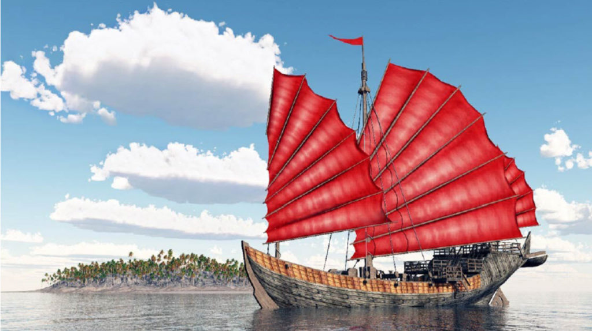
31OCT20 by Ron Ryan
In relatively shallow ocean waters on the north east coast of Newfoundland Island there are the remains of several ships with the most unusual characteristics. It has been determined that these ships may be the oldest intact ships in the world. We constantly hear of discoveries of the remains of ancient ships and, maybe, because of that, assume that there must be oodles of ancient ships preserved the world over.
Such is not the case. In fact, the number of ships in the 200 – 400-year-old range, in any near-complete state of preservation, can be counted on one’s digits.
The Oldest Known real-ancient Ships
The oldest known real ancient ships are the Mary Rose (1509), a British warship that was sunk in action in 1545, and the Vasa (1628), a ship that did not make it out of Copenhagen harbor before rolling over.
It seems to be common knowledge in most historical circles now that the Chinese began a campaign, in the late 1300s, to build a large fleet and to attempt to exert its hegemony over the nations of south east Asia. A sub-objective of that initiative was to create a world map. There were so many ships in that enormous fleet that National Geographic Magazine called the great armada, “a massive shadow on the ocean that moved like a floating city that stretched across miles and miles of ocean.” (January 9, 2014). National Geographic also states that the Chinese emperor ordered the fleet to take to the ocean and “to sail to the ends of the earth.”
Indicative of their success, is evidence from recent scholarship that has determined that the Chinese had a world map
by 1430 AD, an achievement that could have resulted only from the Chinese fleets visiting virtually every point on earth, including Antarctica.
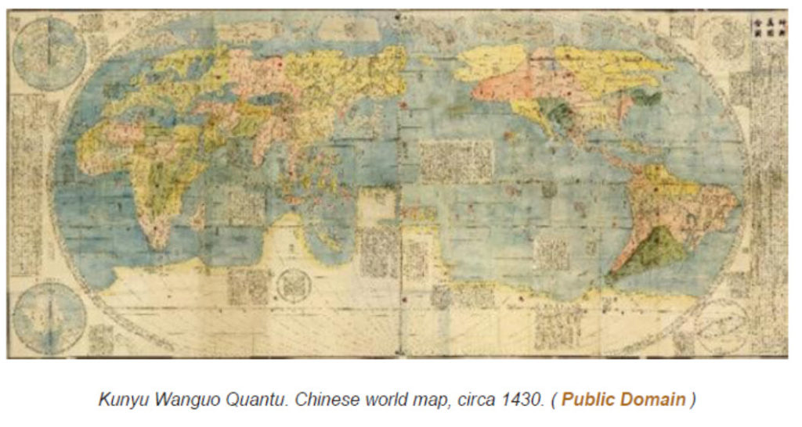
Kunyu Wanguo Quantu. Chinese world map, circa 1430. ( Public Domain )
Grand Admiral Zheng He’s Treasure Voyages
The Grand Admiral of this formidable armada was one Zheng He (variously spelled), a eunuch who was the favorite of the emperor, Zhu De, and who, although having the support and admiration of the palace eunuchs, had only the enmity of the mandarins who feared losing their power and influence. Apparently, around 1430, the mandarins had succeeded in convincing the sitting emperor to cease the “treasure voyages.”
The Treasure Fleet Sets Sail Zheng He's most important role in his master's service was being the commander-in-chief of the new treasure fleet, which would serve as the emperor's principal envoy to the peoples of the Indian Ocean basin. The Yongle Emperor appointed him to head the massive fleet of 317 junks crewed by over 27,000 men that set out from Nanjing in the fall of 1405. At the age of 35, Zheng He had achieved the highest rank ever for a eunuch in Chinese history. With a mandate to collect tribute and establish ties with rulers all around the Indian Ocean, Zheng He and his armada set forth for Calicut on India's western coast. It would be the first of seven total voyages of the treasure fleet, all commanded by Zheng He, between 1405 and 1432. During his career as a naval commander, Zheng He negotiated trade pacts, fought pirates, installed puppet kings, and brought back tribute for the Yongle Emperor in the form of jewels, medicines, and exotic animals. He and his crew traveled and traded not only with the city-states of what are now Indonesia, Malaysia, Siam, and India, but also with the Arabian ports of modern-day Yemen and Saudi Arabia. Although Zheng He was raised Muslim and visited the shrines of Islamic holy men in Fujian Province and elsewhere, he also venerated Tianfei, the Celestial Consort and protector of sailors. Tianfei had been a mortal woman living in the 900s who achieved enlightenment as a teenager. Gifted with foresight, she was able to warn her brother of an approaching storm at sea, saving his life. Final Voyages In 1424, the Yongle Emperor passed away. Zheng He had made six voyages in his name and brought back countless emissaries from foreign lands to bow before him, but the cost of these excursions weighed heavily on the Chinese treasury. In addition, the Mongols and other nomadic peoples were a constant military threat along China's northern and western borders. The Yongle Emperor's cautious and scholarly elder son, Zhu Gaozhi, became the Hongxi Emperor. During his nine-month rule, Zhu Gaozhi ordered an end to all treasure fleet construction and repairs. A Confucianist, he believed that the voyages drained too much money from the country. He preferred to spend on fending off the Mongols and feeding people in famine-ravaged provinces instead. When the Hongxi Emperor died less than a year into his reign in 1426, his 26-year-old son became the Xuande Emperor. A happy medium between his proud, mercurial grandfather and his cautious, scholarly father, the Xuande Emperor decided to send Zheng He and the treasure fleet out again. Death In 1432, the 61-year-old Zheng He set out with his largest fleet ever for one final trip around the Indian Ocean, sailing all the way to Malindi on Kenya's east coast and stopping at trading ports along the way. On the return voyage, as the fleet sailed east from Calicut, Zheng He died. He was buried at sea, although legend says that the crew returned a braid of his hair and his shoes to Nanjing for burial. -thought Co
It is not known who actually initiated the voyages. Although Emperor Zhu De gets the credit, the first of the ships were in the water in less than two years after Zhu De assumed the throne, an impossible miracle of construction attributed to the chief administrator, Zheng He, who was subsequently named the admiral of the enormous fleet.
Zheng He gloried in the strength and endurance capacities of his ships on the world’s oceans. Engraved on a tablet at Fujian is a quote attributed to the admiral :
“We have travelled more than 100,000 Li (Approximately 50 000 KM ) of immense water spaces and have witnessed in the ocean waves like mountains, while our sails, unfurled like clouds day and night, continued their course like a star, traversing those savage waves as if we were treading a city street…”
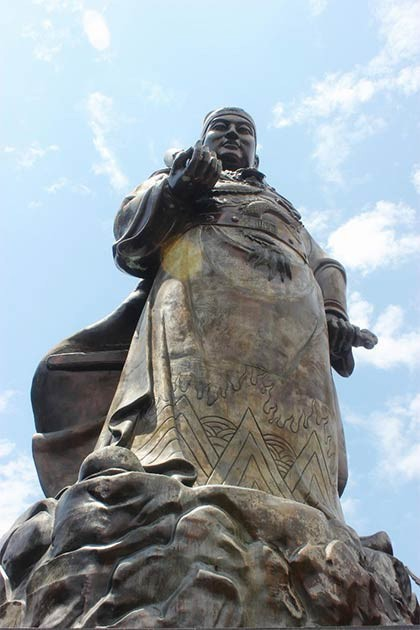
Although there is very little sound information about the Chinese effort at hegemony, over the forty or so years from the late 1300s to about 1433, there seems little doubt that the Chinese treasure fleets did make seven or eight voyages from around 1401 to 1435. There is no definitive information to indicate exactly where ALL of the ships went.
It is not even known how many ships of each fleet arrived back in China or, indeed, when. Indeed, some people refer to the ships of these voyages as “Ghost Fleets” because the reliable information about them is so very sparse.
There seems to be little doubt that the Chinese constructed ships of such a size during the first quarter of the 15th Century, that they would not be rivalled for another 450 years.
Between 1405 and 1433, Ming China under the rule of Zhu Di, sent out enormous armadas of ships into the Indian Ocean commanded by the eunuch admiral Zheng He. The flagship and other largest treasure junks dwarfed European ships of that century; even Christopher Columbus's flagship, the "Santa Maria," was between 1/4 and 1/5 the size of Zheng He's. Drastically changing the face of Indian Ocean trade and power, these fleets embarked on seven epic voyages under Zheng He's guidance, resulting in a rapid expansion of Ming China's control in the region, but also of their struggle to maintain it in years to come due to the financial burden of such endeavors. Sizes According to Ming Chinese Measurements All of the measurements in the remaining Ming Chinese records of the Treasure Fleet are in a unit called "zhang," which is made up of ten "chi" or "Chinese feet." Although the exact length of a zhang and chi has varied over time, the Ming chi was probably about 12.2 inches (31.1 centimeters) according to Edward Dreyer. For ease of comparison, the measurements below are given in English feet. One English foot is equivalent to 30.48 centimeters. Incredibly, the largest ships in the fleet (called "baoshan," or "treasure ships") were likely between 440 and 538 feet long by 210 feet wide. The 4-decked baoshan had an estimated displacement of 20-30,000 tons, roughly 1/3 to 1/2 the displacement of modern American aircraft carriers. Each had nine masts on its deck, rigged with square sails that could be adjusted in series to maximize efficiency in different wind conditions. The Yongle Emperor ordered the construction of an amazing 62 or 63 such ships for Zheng He's first voyage, in 1405. Extant records show that another 48 were ordered in 1408, plus 41 more in 1419, along with 185 smaller ships throughout that time. Zheng He's Smaller Ships Along with dozens of baoshan, each armada included hundreds of smaller ships. The eight-masted ships, called "machuan" or "horse ships," were about 2/3 the size of the baoshan measuring approximately 340 feet by 138 feet. As indicated by the name, the machuan carried horses along with timber for repairs and tribute goods. Seven-masted "liangchuan" or grain ships carried rice and other food for the crew and soldiers in the fleet. Liangchuan was about 257 feet by 115 feet in size. The next ships in descending order of size were the "zuochuan," or troopships, at 220 by 84 feet with each transport ship having six masts. Finally, the small, five-masted warships or "zhanchuan," each about 165 feet long, were designed to be maneuverable in battle. Though tiny compared with the baochuan, the zhanchuan were more than twice as long as Christopher Columbus's flagship, the Santa Maria. The Treasure Fleet's Crew Why did Zheng He need so many huge ships? One reason, of course, was "shock and awe." The sight of these enormous ships appearing on the horizon one by one must have been truly incredible for the people all along the Indian Ocean's rim and would have enhanced Ming China's prestige immeasurably. The other reason was that Zheng He traveled with an estimated 27,000 to 28,000 sailors, marines, translators and other crew members. Along with their horses, rice, drinking water, and trade goods, that number of people required a staggering amount of room aboard the ship. In addition, they had to make space for the emissaries, tribute goods and wild animals that went back to China. -Thought Co.
Our interest here will focus on the voyage of 1433 – 1435.
At least six voyages of the Chinese Treasure Fleet seem to have been conducted successfully, and there are some records for some of the ships. Admiral Zheng He was in charge of at least some of the voyages. Moreover, there is no record in China of what Admiral Zheng He was doing during the 1417 – 1419 voyage.
Indeed, after the sixth voyage, related history is even more fuzzy. The eunuchs and the mandarins were vying for power and for influence. The old emperor, Zhu De, died; the next one died; the third, Xuan De, had acceded to the “Dragon Throne” and was persuaded by the mandarins that further voyages would be to China’s detriment.
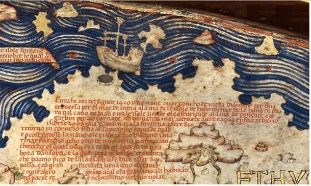
Moreover, it seems clear that the mandarins were fearful of Zheng He and wanted to get rid of this troublesome eunuch. Although Zheng He was a favorite of the first emperor, he was not favored by the second and third. However, the third emperor was reluctant to have Zheng He have a fatal “accident,” and the mandarins were afraid to dispatch Zheng He unless they had a clear understanding from the emperor.
The emperor realized that if Zheng He met with some accident, real or plotted, then the general finger would be pointed at the palace. Even if the emperor held “absolute power,” there were always war lords and other powerful officials ready – and willing – to exploit a judgment lapse. Not willing to risk the wrath of the Chinese people, the emperor appointed Zheng He to some menial administrative job, to get him out of the way. That did not satisfy the mandarins who were beginning to feel their power. They wanted Zheng He out of the picture, completely and permanently.
Besides, in the view of the palace mandarins, Zheng He, a renowned master of military tactics who had been instrumental in placing emperor Zhu De on the throne, was likely at precisely the right place and precisely the right time for him to nurture alliances with those who would be happy to have someone that they could manipulate on the throne. They were concerned at least as much about their heads as they were about their positions of power.
There is, however, no indication that Zheng He entertained any ambition in that direction. Indeed, although still a young man, about 60, apparently, he was ill.
The emperor was cautious. There were literally hundreds of ships out in the bay, riding at anchor. To the Chinese people these ships represented China’s pride. Why were the ships not gone on some important voyage? What is the use of ships, in port, at anchor, slowly rotting, and the reputation and power of the emperor slowly rotting along with them? The ships simply had to go, somewhere. The related optics were crucial!
What to do?
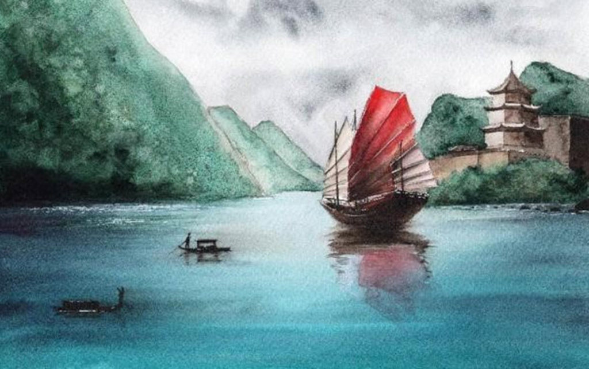
Go away and NEVER come back.
The emperor recalled Zheng He to Nanjing, the then-capital. What actually happened between the Great Admiral and the emperor is not known. However, it is easy to guess: The emperor told Zheng He to crew all of the ships, to fill the ships, at the emperor’s expense, with everything Zheng He could possibly think of: soldiers, horses, armaments, gunpowder, priests (Muslim, Buddhist, Hindu), specialists of every kind, doctors and other medical personnel, medicines, preserved foods, seeds, root stalks, surveyors, technologists, craftspeople, prostitutes, animals (a veritable Noah’s Ark!), slaves, fine china, silks, and so on.
Then, the emperor had a private conference with Zheng He. The emperor said:
“You have everything you could possibly need. You have overseen everything yourself. You cannot blame me if you are missing something. Talk to your officers. Determine whether there is still something you need.”
Then, in a whisper so that none of the listeners could hear – and in the Emperor’s palace there were always listeners:
“Take the fleet. Go away. I don't care where you go. But, wherever you go, do NOT come back! NEVER come back! Do NOT let any of your officers or sailors come back. Nobody, except ....” and he explained the exception. “You have my best wishes. I never want to see you again! Be smart! Go!”
The carved and painted stern of the last ship had hardly disappeared over the horizon before the mandarins began collecting every last scrap of information that they could find about the fleets and about Zheng He.
Everything was burned, including ship logs, charts of the voyages, maps, architectural drawings of the various types of ships, ship models, tools, records of construction – in short, everything that they could get their hands on. Apparently, the world map was among the scraps of information that did survive, likely hidden by one of the eunuchs.
The fleet had gone for about a year.
Then, one day, a ship, much tattered, arrived back in the harbor. The captain went directly to the emperor. There had been several enormous tempests on the far oceans. Every last ship had been lost, and the grand admiral, himself, the beloved Zheng He, had gone to the bottom with the first tempest near Ceylon. The second tempest had taken the remainder of the fleet near Indonesia.
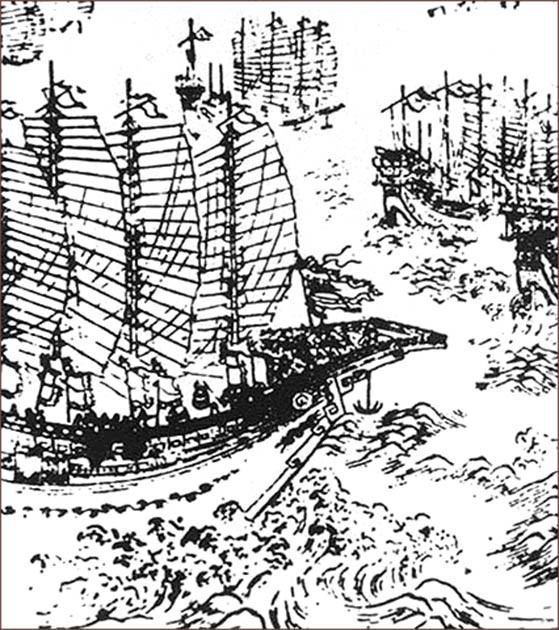
The emperor then announced the sad news to a shocked and mournful nation. He ordered a tomb be built for the beloved Zheng He. In that tomb, they placed one of Zheng He’s robes, a pair of his slippers, and maybe a lock of the revered man’s hair.
What happened to Zheng He and the great fleet?
Nobody knows!
What is known is that not a single ship of that fleet, other that one messenger, ever made it back to China. Not a single marine officer, not a single craftsperson, prostitute, or sailor. NOTHING was ever heard from them again. Nothing!
For the most part, the myth of the death of Zheng He in India or Ceylon has been accepted in China as historical fact. There is little room in China for shades of grey, most things being black or white. Zheng He and the great fleet become part of the official national lore. The other aspect of the story, the tempests that took all of the ships, except one, to the bottom of the ocean is, likewise, the official story, it was not to be disputed and not to be questioned, at the peril of one’s head!
What happened to the ancient ships?
About 600 years later, two decades ago, China began to resurrect the story of Admiral Zheng He because it was politically convenient to do so, at least according to the detractors of China’s sometimes awkward diplomacy. Besides, the story of Zheng He and the “peaceful” fleets was a source of pride for China, something they could point to as an example of China’s friendly international intentions.
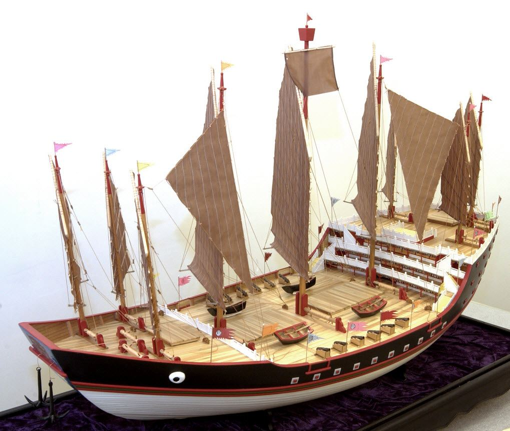
Artifacts of the great fleet of 600 years ago would be of inestimable value to Chinese propaganda. Therefore, China entered into agreements with Sri Lanka, Indonesia, and Kenya to find some of the remains of the great fleet. There just had to be thousands – if not millions – of artifacts, just lying on the bottom of the ocean awaiting retrieval by a grateful nation.
China has spent hundreds of millions of dollars, utilizing the latest underwater technologies of the Chinese navy, in an effort to retrieve the millions of artifacts. Plans for museums in China and other displays worldwide were in the planning stages. China was on the cusp of an enormous diplomatic and publicity coup!
What did they find?
After a decade or so of searching in the waters around Sri Lanka and Indonesia, what did they find? Nothing!
No ships, no ship remnants, no artifacts, no fine china, no amphora of preserved olives, no skeletons of Chinese sailors. Nothing!
Nothing!
But somehow – without, just now, having a complete narrative to explain it – at some time before recorded history in the annals of Newfoundland Island , the Chinese arrived. They called the island “Island like a Chinese garden” and mapped the whole north western area of the North Atlantic as far as into the Davis Strait and, indeed, according to Chinese sources, Hudson’s Bay. Indeed, the Matteo Ricci Map (Kunyu Universal Map) is a copy of a Chinese map (Kunyu Wanguo Quantu Map) that was completed by 1430, indicating that the voyages of the Chinese fleets from 1405 onward – or at some earlier time – were successful in “mapping the world” and that Zheng He would have had an almost complete map of the world by which to guide his last voyage, some of which – the north west North Atlantic seaboard – Zheng He, himself, had likely mapped during the 1417 – 1419 voyage.
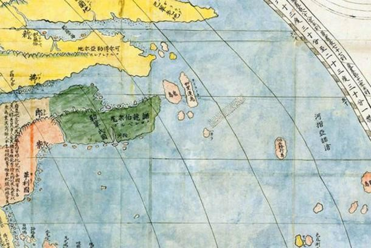
Portion of Kunyu Wanguo Quantu map showing Newfoundland Island. The four ancient Chinese characters on the representation of Newfoundland Island read “Island like a Chinese Garden.’ (Public Domain )
The ancient Chinese ships in Newfoundland
At least two of these ships are on the ocean bottom in shallow water in a protected harbor on the rugged north east coast of Newfoundland Island. Other ships have been detected with sonic equipment, including one that appears to be 200 meters (656.17 ft.) long. Moreover, phenomena that has been interpreted as a “graveyard” of ships have been detected in another area of deep, cold water.
The two ships in shallow water have been known about for 350 years or more, from the time of the first European fishermen who arrived in the area and established themselves in what became the dozen or so coastal fishing villages in that area. These ships cannot be European or American. No country, other than China, built ships of this size until well past the mid-1800s. These ships were there before about 1650.
Besides all of that, China has no record of any kind related to the structural aspects of their ships of the Treasure Fleets , no drawings, no models, no descriptions, no images. What China has are the remains of the dockyards that built the ships, some tools, and a rudder that is about 13 – 14 meters (42.65-45.93 ft.) long. Although some marine historians and others have drawn speculative designs of what the ships of the Treasure fleet might have looked like, these drawings do NOT correspond with the ships that have been found in Canadian waters.
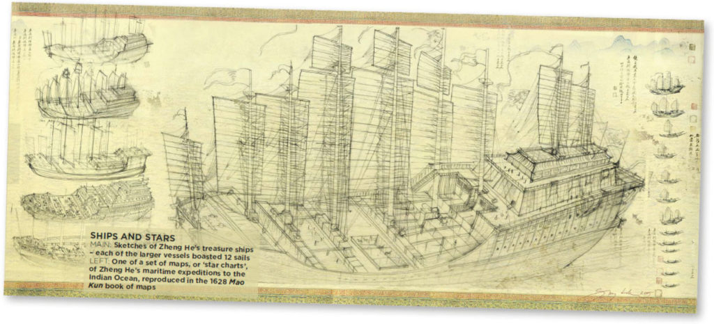
The only known intact examples of the Chinese ships associated with the great fleet are resting on the ocean bottom at the north east coast of Newfoundland Island. Nowhere else in the world are there, presently known, unmistakable large ships that might be identified as the ships of the great Chinese Treasure Fleet.
Based on the balance of probabilities, one would be confident in declaring that these ships are from the great Chinese fleet of 1405 – 1435.
To conclude, it seems clear that in the inner ocean waters on the north east coast of Newfoundland Island are the oldest decked ships in existence, and at least some of them are substantially intact.
By Ronald Lloyd Ryan, DA., PhD.
Model of some of the great Zheng He ships
These were enormous ships, able to have small farms on the deck and cattle pens. They were enormous by all accounts. As such, and as impressive as we can imagine, various people have made, and market scale models of what we can make a hypothesis on what these ships were like.
This model is made from the original drawings of the ship. And it is a beauty.
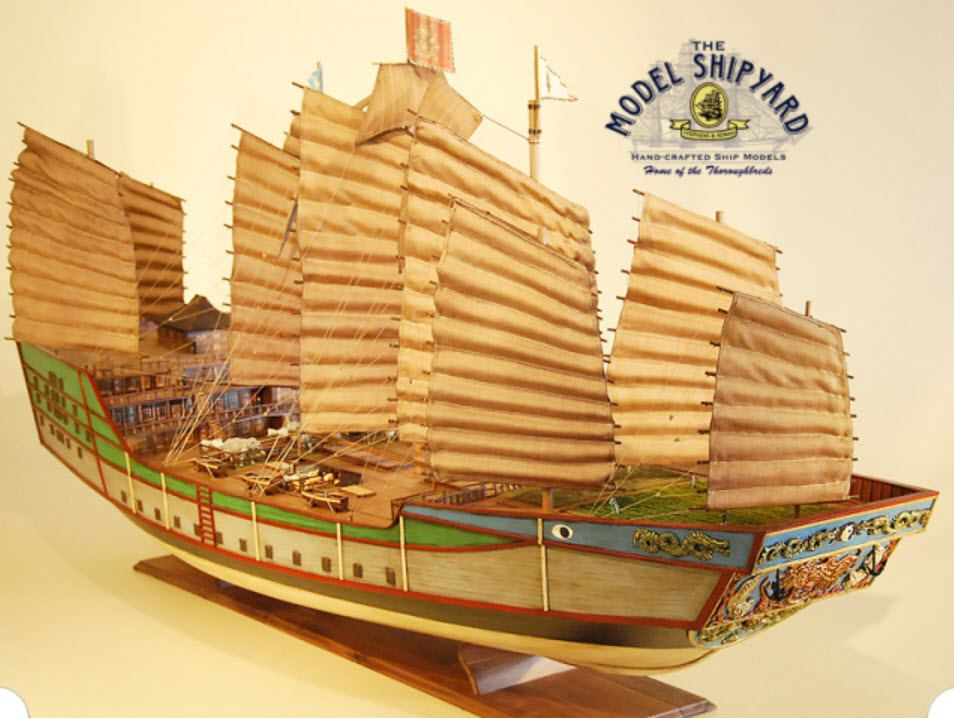
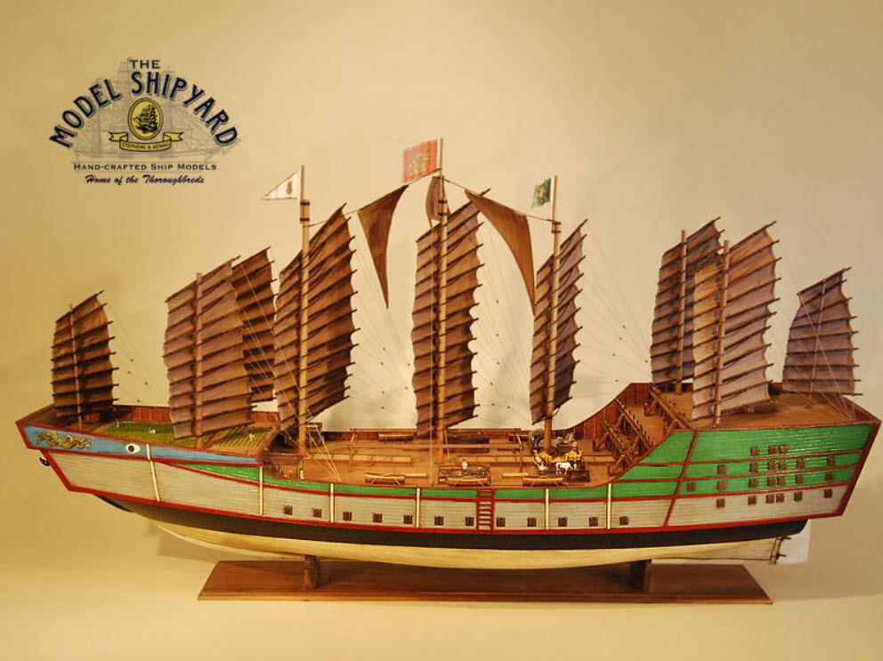
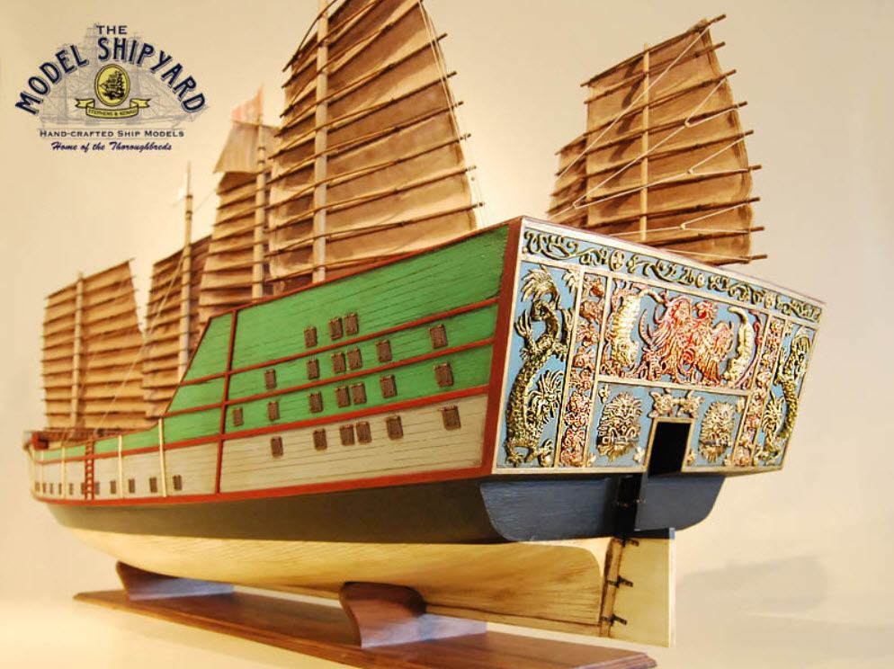
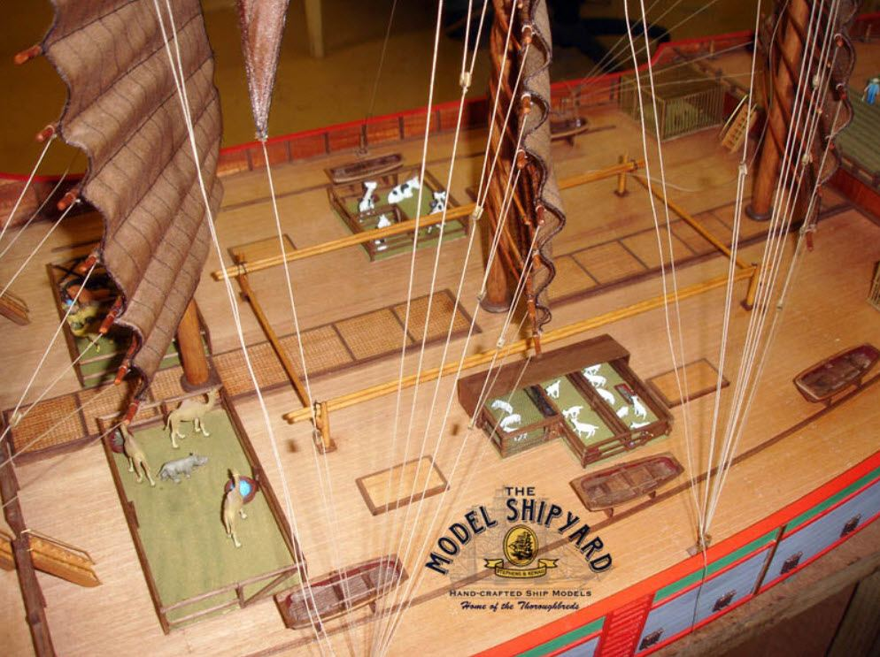
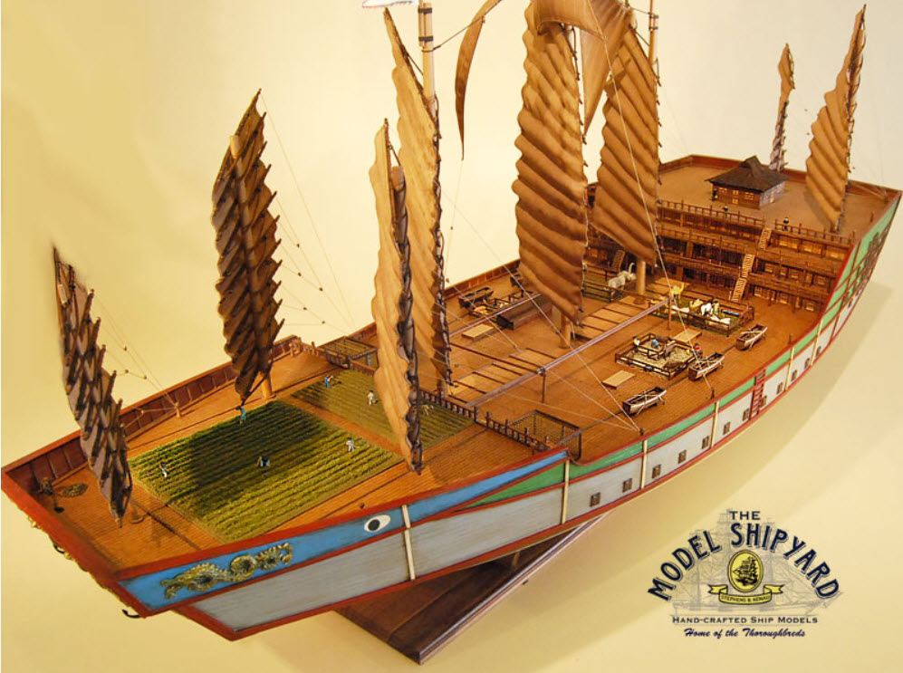
History of the Zheng He Treasure Ship The Chinese Treasure Ship was a large wooden ship in the fleet of Admiral Zheng He, during the early 15th century Ming Dynasty. He led 7 voyages. There seems to be disagreement among scholars about the factual accuracy and correct interpretation of accounts of the treasure ship. Treasure ships were considered luxury ships rather than warships. According to some records, Zheng He’s treasure ships were mammoth ships with 9 masts and 4 decks. Zheng He’s treasure ships could accommodate more than 500 passengers, as well as a massive amount of cargo. Zheng He’s fleet consisted of 300 ships, including 62 treasure ships. Chinese records assert that Zheng He has traveled extensively, sailing as far as East Africa. On the return of Zheng He’s last voyage, he found a new Emperor whose court was uninterested and even hostile toward the continuation of his naval adventures. Zheng He’s ships were decommissioned and sat in the harbor until they rotted away. Some scholars suggest that the Emperor ordered the treasure ships and records to be burned, although exact information on their fate is unknown. A replica of Zheng He’s treasure ship was built in Nanking and was to be ready for sailing in 2013.
MM Thoughts
That was a great article, eh? You betya!
After reading the article, I went and conducted a preliminary Google search for “sunken Newfoundland ships” and came up with some interesting hits. Not really germane to this particular article (unfortunately), but really interesting never the less.
The only problem that I have with this great story is a singular question. “What happened to the Chinese that scuttled the ships in Newfoundland?”
Where are the ruins, or remains?
- Ancient Chinese script may prove Asians discovered America …
- The Vinland Map: A Most Non-European Artifact | Ancient …
- The Beothuck Key: Finding a Lost Chinese-Norse …
Well…
Let’s deep-dive” into this with yet another article from Ancient Origins, and one by the same author;
The Beothuck Key: Finding a Lost Chinese-Norse Civilization in Canada
Two mysteries – one Oriental, one Western – have attracted considerable attention recently both in academic and popular spheres: [1] the disappearance of the Seventh Chinese Treasure Fleet and [2] the disappearance of the people of Greenland. Until now, people have not considered that the two stories might be somehow connected.
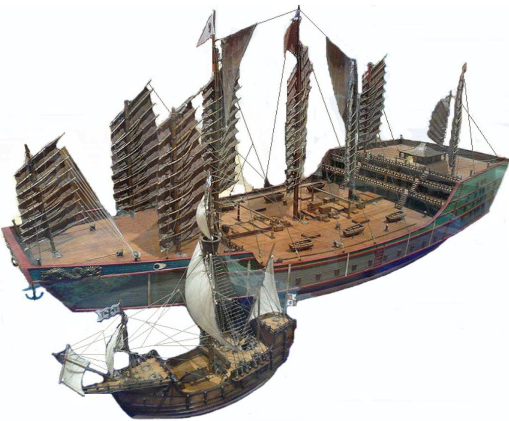
Indeed, although very much in retrospect, there were numerous pieces of evidence readily available that pointed to the two narratives possibly being associated, even if the key element were missing. However unlikely and counter-intuitive, it appears that key is in the much-disputed continuing existence of the Beothuck People of Newfoundland Island – without them neither of the mysteries would have been resolved.
Origins of the Beothuck People
The journey of discovery began quite by accident, when a Beothuck person observed some unusual artifacts at museums in China that seemed to be the analogues of artifacts of the Beothuck People.
The resulting investigation led to all known information about the Beothuck people being sifted and evaluated, with the conclusion being that the Beothuck People had Chinese origin.
The Beothuk are the aboriginal people of the island of Newfoundland. They were Algonkian-speaking hunter-gatherers who probably numbered less than a thousand people at the time of European contact. The Beothuk are the descendants of a Recent Indian culture called the Little Passage Complex. ... By the beginning of the 19th century, the Beothuk were reduced to a small refugee population living along the Exploits River system and attempting to subsist on the inadequate resources of the interior. Although a succession of Newfoundland governors had, since the middle of the 18th century, attempted to establish friendly contact with the Beothuk, it was probably too late to change a pattern which had existed for perhaps 250 years. Shanawdithit, the last known Beothuk, died in St. John's, Newfoundland in 1829. -The Beothuk People
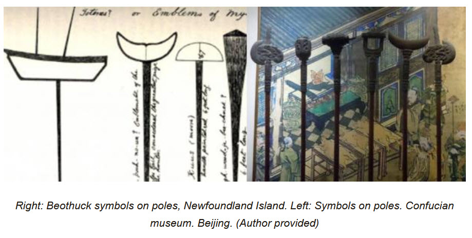
Beothuk, North American Indian tribe of hunters and gatherers that resided on the island of Newfoundland; their language, Beothukan, may be related to Algonquian, but some authorities believe it to have been an independent language. When discovered by John Cabot in 1497 the tribe probably numbered no more than 500 persons; in the succeeding centuries the Beothuk were decimated by Europeans and by Mi’kmaq (Micmac) hunters crossing from Nova Scotia. A few survivors may have escaped to Labrador to intermarry with the Innu (Montagnais). Little is known of Beothuk culture. The people were apparently divided into small bands of a few related families, each band having its own leader. Their skill as canoeists was noted by many early writers; they speared seals with primitive harpoons and fished for salmon and shellfish. Equally at home in the woods, they tracked deer with bow and arrow. Birch bark was used to make cooking vessels and wigwams. They smeared red ochre on their skin, apparently for both religious reasons and protection against insects; this habit is thought to be the source of the European reference to Native Americans as “red” people. -Beothuk | people | Britannica
The considerable skepticism about the Chinese voyages seemed to be primarily because the idea of massive Chinese ships, as suggested by Menzies and Hudson was thoroughly doubted. Unfortunately, one could not appeal to China because that country has retained no information as to the design of such massive ships – no models, no sketches, no descriptions.
Curious genetic and ancestral stories of the Beothuck People led to an informal survey that revealed mtDNA of Celtic, Norse, and other Scandinavian/Baltic origin, leading to speculation that all of the people were descendants of the Norse from the time of the Viking Sagas.
However, that speculation was disabused by research reports to the effect that (a) Newfoundland Island had had several waves of occupation, and (b) there is a genetic discontinuity between the maternal lineages of the various occupation groups.
Moreover, historical reports indicate that whoever was on the island were substantially, or completely, killed off by some blight or combination thereof (plague, typhus, smallpox) between 1402 and 1404, which meant that as of that later date the island was effectively empty.
If that were true, then it meant that the Norse ancestors of the contemporary Beothuck must have colonized at least part of the island sometime after 1404 AD.
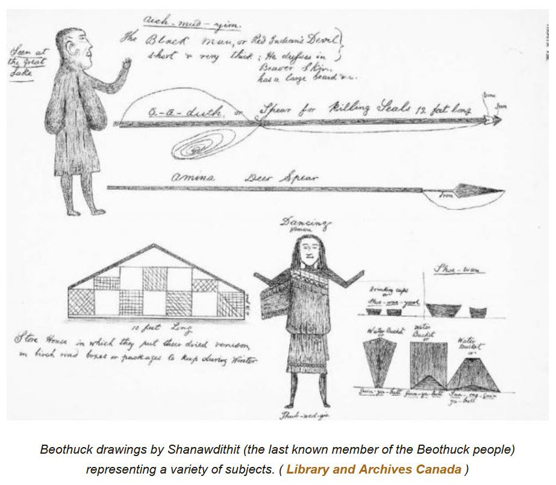
Ties to the People of Greenland
That led to a consideration of the story of the disappearance of the people of Greenland in the early 15th Century. There is no record of the people of Greenland going east, as some experts have speculated.
According to Catholic Church records, there had been as many as 5000 people in Greenland circa 1409. That’s a lot of people to account for.
In a pastoral letter from the Holy See addressed to the Bishops of Skalholt and Holar in Iceland, dated September 20, 1448, concern was expressed that Greenland had been raided by a “Fleet of heathens” some 30 years previously, and that all of the people had been taken.
It is not immediately clear how the Pope acquired that information.
Related to that was another piece of information: tributes began to arrive at Rome sometime in the early-1400s, from “ Vinland.” Clearly, a vector of communication existed from the “far western lands’ to Rome.
Recent research suggests that there was no violent confrontation in Greenland.
Indeed, everything points to a peaceful, organized departure of the people. The conclusion was that the people of Greenland, all 5000 of them, along with their priests and other religious people (monks and nuns), peacefully departed their homes sometime after 1409 and before about 1420.
The Mystery of the Beothuck Language
The language of the Beothuck has been something of an enduring mystery.
William Cormack is the only person whose report we have who actually spoke with the Beothuck. Cormack said that the Beothuck language had all of the sounds of Scandinavian languages, maybe Swedish.
Additionally, J. T. Mullock , Roman Catholic Bishop of St. John’s, Newfoundland, said that many people thought that the Beothuck had “Northmen” ancestry.
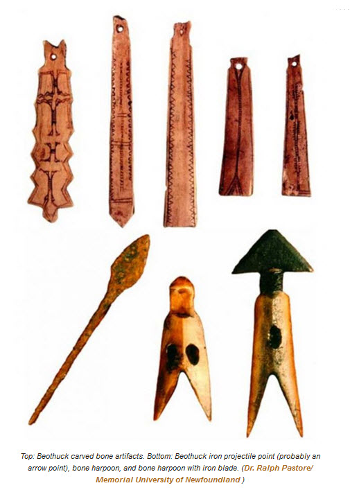
Moreover, Dr. John Cooper of Dalhousie University concluded that the language was at least 25% Gaelic and Norse. There was not, necessarily, much difference between Norse and Gaelic because, as Wallace says,
“... the Norse were mixed with Celts and Picts through intermarriage and slavery.”
Because Newfoundland Island was empty of people, say from around 1404, and because the people of Greenland departed their homes around 1418, and because a large number of people from Newfoundland Island has Norse ancestry from the forests of the island, it seemed reasonable to conclude that the Beothuck people were the descendants of the “missing” Norse of Greenland.
The notion of a fleet of ships, as per the Pope’s letter, was, to say the least, intriguing.
More on Beothuck Ancestry
The investigation has now arrived at the point where two phenomena seem to be supported: The Beothuck people had Chinese ancestry and the Beothuck people had Norse ancestry.
The local people in that remote and isolated geography, although having a high degree of illiteracy, had a rich oral tradition. For many generations these people, the European ancestors of whom came to the area around the mid-1700s or earlier, told stories of enormous ships that had been on the nearby ocean bottom since before their arrival. As late as 1890, people could easily see one massive ship in a sheltered harbor of relatively shallow water, and the mast of that ship – enormous, much larger than anything that they had ever seen or could imagine – protruded from the ocean surface. Moreover, at that time, they could see “dishes” and “jugs” on the ocean bottom near the ship.
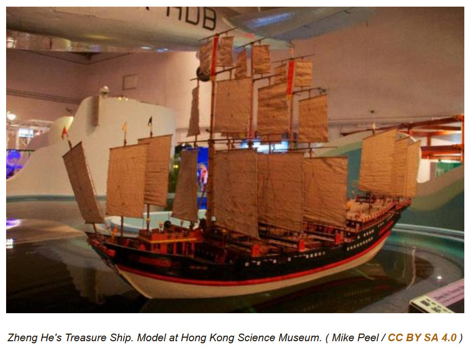
The subsequent generation (circa 1930) contained a story that two teen boys had attempted to measure the ship and, being creative with fishing cords, estimated that one ship was about 400 ft. (130 meters) long.
After several months of searching with Google Earth, during 2017, two almost identical ships were located, each being about 450 ft. (150 meters) in length. Since then, several other equally large ships, seemingly intact, have been found resting on the ocean bottom. The only ships that fit the circumstances are those of the Chinese of the early 1400s. No European or American ship of the dimensions of the ships that were found would be constructed until after the mid-1800s.
At that point it is possible to suggest, at least, that the enormous fleet that had taken the people from Greenland had been a Chinese fleet. If that fleet brought the people of Greenland to Newfoundland Island sometime around 1418, that would explain the Norse and Chinese ancestry of the Beothuck People.
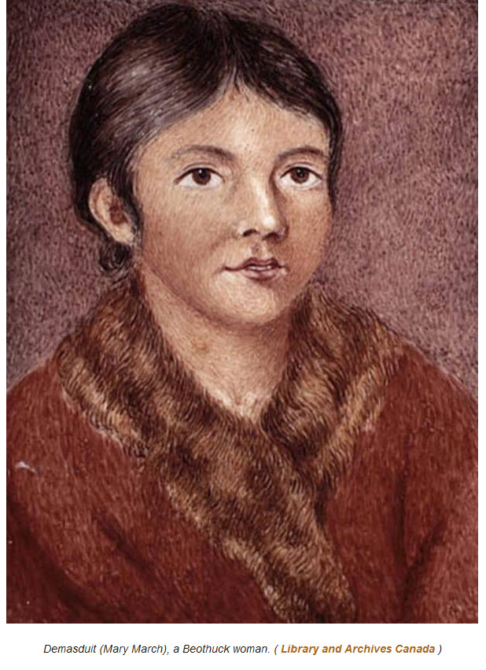
The Voyage from China and Links to Zheng He
The available information supports the following scenario: after leaving port in southern China the fleet would split into several flotillas, each expediting their individual appointed tasks, more or less, and reassembling later. One voyage took place during 1417 – 1419. The flotilla that had been assigned the task of mapping the western North Atlantic area – whatever the Chinese called it – was under the command of Admiral Zheng He .
It crossed the North Atlantic, discovered Newfoundland Island (1417), and, maybe the next year (1418), returning from mapping Hudson’s Bay, chanced upon the Norse of Greenland, in a state of destitution and at the cusp of starvation. The Chinese “rescued” these desperate people and transported them to Newfoundland island, the mythical Vinland of the Norse people. Zheng He returned to China, but came back to Newfoundland in 1435.
The Matteo Ricci (1552 – 1610) map of 1605 has the lands of the north west Atlantic identifiably drawn. Someone spent time charting the north west Atlantic area, did the cartography, and returned to China, writing four Chinese characters on the land that would be identified as Newfoundland Island: “Island like a Chinese garden.” According to Lee, the Ricci map is a copy of a Chinese map and that the Chinese had a complete map of the world by 1430, a map that included the northwest Atlantic area.
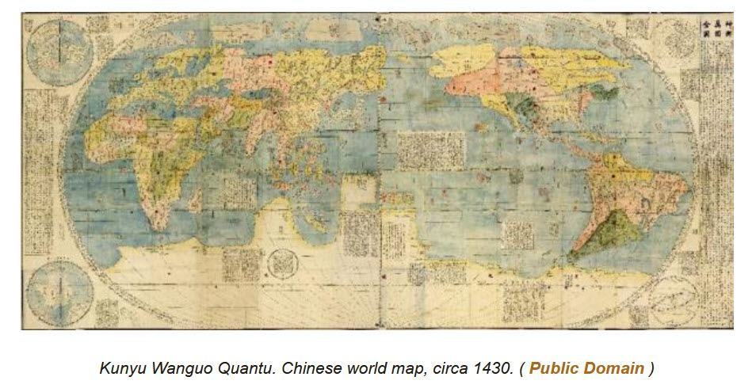
Did Zheng He know where he was going? Was the initial map-making done by a previous Chinese fleet and before 1418? Did Zheng He’s admirals do the charting of the northern lands? Who would have named Newfoundland Island so glowingly?
Wherever he was, the Great Admiral seems to have boasted:
We have traversed more than 100,000 li of immense water spaces and have beheld in the ocean huge waves like mountains rising in the sky, and we have set eyes on barbarian regions far away hidden in a blue transparency of light vapors, while our sails, loftily unfurled like clouds day and night, continued their course. ..
That would have gotten him to Greenland and back in the 1417-1419 time frame of that voyage.
Signs of a Lost Settlement
As a confirmation exercise, Google earth was utilized to seek indicators of Norse and Chinese occupancy of Newfoundland Island. That investigation resulted in the identification of a ubiquitous pattern. It was determined that the pattern was communal housing – much as had been described by John Cabot in 1497 and Jacques Cartier in 1534.
These dwellings were as much as 164 ft. (50 meters) in diameter and contained 10 – 12 family cells around a central common area. These dwellings appeared to be one-story adaption of Hakka-Han TuLu in south east China of the time (which continues today), the area that was the origin of the Treasure Fleets. The basic Hakka housing pattern incorporated Norse features to accommodate winter conditions, those features that the Beothuck descendants had incorporated into their root-cellars, many of which still exist. (Incidentally, the Hakka Tulu figures in the recent movie, “Mulan.”)
Treks into the forest confirmed the speculations: patterns on the forest floor, now covered with trees, certainly still retained the discernible and recognizable communal Tulu pattern. A survey of the island with Google Earth Pro revealed literally thousands of these structures. An estimate related to the number of structures detected suggested dwellings of maybe as many as 300,000 people, an enormous number in comparison to the paltry several thousand that experts have been suggesting up to now.
Satellite imagery revealed structures that seemed to be defensive walls, and treks into the forest confirmed the existence of the artifacts, some of which were not completely occluded by vegetation overburden. One trek also resulted in the discovery of a carving of a three meter long hand, chiseled into a rock-face, with the letter “J” carved just above it, and a scepter carved along the wrist.
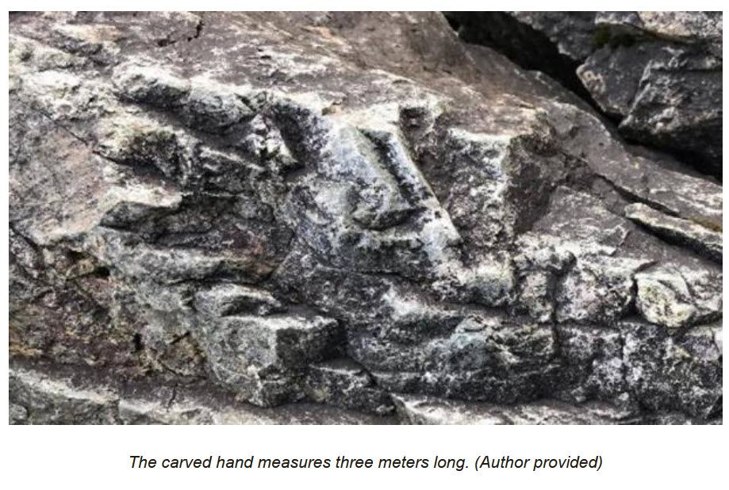
The next discoveries were towers and a wall, and, then, astonishingly, several Buddhist-type pyramids. About 12 miles (20 km) away, a set of buildings was discovered, including a three-tiered pagoda and an intact stone church, a basilica – a structure that is not in the history of Newfoundland and Labrador, and not in the history of the local Roman Catholic archdiocese.
The next astounding discovery was a set of massive bluff-carvings, the first found being a Chinese mythical dog, about 161 sq. ft. (15 sq. m.). The image is almost identical to that of a Chinese postage stamp for 2008 “The Year of the Dog.”
Above the dog carving, and about the same size, was the Monkey King, again from Chinese mythology. About a hundred carvings were found in all, ranging in size from 32 – 1640 ft. (10 – 500 meters) in length, the latter being a bird, 500 meters from beak to tail feathers, and about 656 ft. (200 meters) wingtip to wingtip.
The next mysterious phenomenon discovered was a boat, about 114 ft. (35 meters) long, that seems to have been under construction. Then, ten or so similar boats were discovered, all under construction, all in the forest well away from the coast.
A number of what were determined to be row boats, maybe water taxis, were located, still intact, preserved by the chemicals in the peat ponds where they have now lain for maybe as much as 400 years. Thus, it is possible to determine the design of these boats of so long ago. Why the boats were built in the location described is a mystery unto itself and has resulted in speculation that is tangential to this narrative.
Although some experts have written about the massive Chinese ships the fact is that the only existing more-or-less intact Chinese ships from the medieval Chinese period – and, indeed, any medieval period – and, thus, the only accurate information about these ships, there being next to nothing in China, are being preserved by the frigid ocean waters of north east Newfoundland Island. The next oldest existing ship from that period, worldwide, is the British warship, Mary Rose (Circa 1540), about 50% of which was recovered from her watery grave.
Compiling the Evidence in Newfoundland
Although Zheng He was erased from Chinese history shortly after 1433, he has been recently resurrected by China for, as some see it, a contemporary form of Chinese hegemony.
The accepted narrative, in China and south east Asia, of the demise of Zheng He and his enormous seventh fleet is that all succumbed to a typhoon somewhere near Sri Lanka or Malaysia. Virtually every country in south east Asia is seeking evidence that Zheng He and the remains of his seventh fleet is somewhere in their backyard. The Chinese government, believing their own myth, has recently spent hundreds of millions of dollars, with the help of the latest Chinese military technology, in the belief that they were destined to find the remains of their fleet. They have found nothing.
The research group on Newfoundland Island continues to make discovery after discovery that they associate with the Chinese-Norse civilization that began around 1420: fish weirs, harbor complexes, fish processing facilities, buildings (one with a discernible chimney), industrial structures (e.g., huge furnaces).
Moreover, now that considerable evidence and information has been compiled, it is possible to state that, on the balance of probabilities, the only people on the island as of 1450 were the Norse, the Chinese, and their progeny, who called themselves “BeiHanKe” but which was misunderstood as “Beothuck.”
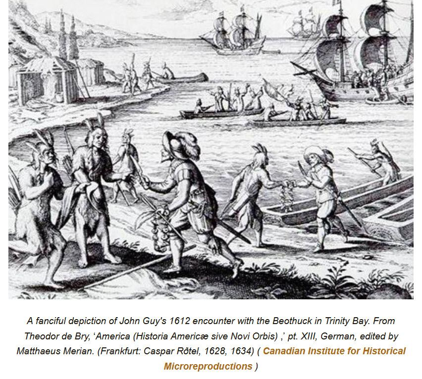
The final conclusion is that the research group in that remote area has found the remains of a collapsed Chinese-Norse civilization of which the contemporary Beothuck are the remnants. Otherwise, they have stumbled on the remains of a collapsed civilization about which nothing else is known.
By Ronald Lloyd Ryan , PhD
Final Conclusions
There is strong reason to believe that Newfoundland was indeed settled by the Chinese. That they interacted, and perhaps forged alliances with local Indians and Vikings. Certainly there was a large city-sized community there in the land described as “Like a Chinese garden”.
No one know what happened to them, and how or why they died out, but it would most certainly make for some interesting reading. They seem to have merged with other migratory and ship-faring peoples, and weathered various periods of illness, natural disasters, and famine. Eventually, they packed up and left.
There is much that I would enjoy reading about these peoples. I look forward to further scholarly studies on this matter.
I firmly applaud Ronald Lloyd Ryan for his great work in this area, and I look forward to his many future discoveries. For this is an area of great interest to me personally.